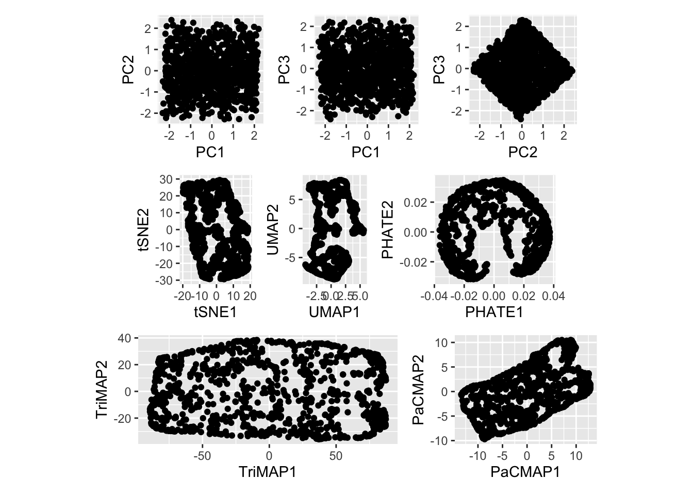

Low-dimensional representation
Today, I will introduce some basic terminologies regarding low-dimensional representation and types of dimensionality reduction techniques and visualize some outcomes of dimensionality reductions of an example dataset.
Let’s begin…🤓
The first question that comes to your mind is,
\(\color{red}{\text{What is meant by low-dimensional representation?}}\)
A low-dimensional representation is a visualization of the dimension reductions on high-dimensional data.
Got it…👏
I know what the next problem you have now is.
How do we define a data set as a high-dimensional data set?
Suppose the number of features (variable observed) is close to or larger than the number of observations (or data points). In that case, the data set is specified as \(\color{green}{\text{high-dimensional}}\). On the other hand, a low-dimensional data set in which the number of features is less than the number of observations.
Next,
Why do we need a low-dimensional representation?
There are various applications in the field of machine learning and deep learning. For example, a low-dimensional data representation can be used as a noise-removal or feature-extraction technique.
Are there any challenges with high-dimensional data?
One of our challenges is that analyzing high-dimensional data requires considering potential problems with more features than observations.
In addition, most classical statistical methods are set up for low-dimensional data because low-dimensional data were much more common in the past when data collection was more difficult and time-consuming. However, the development of information technology has allowed large amounts of data to be collected and stored with relative ease, allowing large numbers of features to be collected in recent years.
Also, visualizing a large number of features takes a lot of work.
I hope you all have a basic idea about the terminologies and the challenges with high-dimensional data. 👏
Dimensionality reduction techniques
The necessity of dimensionality reduction techniques comes as a remedy for the above challenges, especially in the visualization task.
Dimensionality reduction is a common step for data processing. This process is helpful for feature engineering or data visualization. From here on wards, I focus on how the visualization looks in various dimension reduction techniques.
Before starting, \(\color{blue}{\text{how many dimensions are defined as dimensional reductions in low-dimensional space?}}\)
Generally, most dimension reduction techniques allow the reduction of high-dimensional data to two or three dimensions (eg: t-distributed stochastic neighbor embedding (t-SNE)).
Dimension reduction tools for visualization can be categorized as follows.
Linear dimensionality reduction techniques |
Non-linear dimensionality reduction techniques (Manifold learning) |
|---|---|
|
|
|
|
|
|
|
|
|
|
|
|
The high variance directions reflect the key trends in the data set in a linear dimensionality reduction technique. For example, a new axis is linear and may be non-orthogonal (Parashar et al. 2019). In contrast, non-linear dimensionality reduction utilizes non-linear kernels to locate key data set trends while preserving the original data’s local and global structure (neighborhood relation). In terms of preserving the local and global structure, the distance or distance ranks between data points in the original space should be preserved after reducing the dimensions to low-dimensional space.
You can find more details about the local and global structure here.
Example
A simulated dataset is generated to obtain a \(2-d\) plane in \(4-d\) with little noise in third and fourth dimensions.
Code
random_num1 <- runif(1, min = 1, max = 10000000)
set.seed(random_num1)
u <- runif(1000, min = 10, max = 30)
v <- runif(1000, min = 10, max = 20)
x <- u + v - 10
y <- v - u + 8
z <- rep(0, 1000) + runif(1000, 0, 1)
w <- rep(0, 1000) - runif(1000, 0, 1)
df_2 <- tibble::tibble(x1 = x, x2 = y, x3 = z, x4 = w)
langevitour(df_2)Let’s visualize PCA, t-SNE, UMAP, PHATE, TriMAP, and PaCMAP and see whether they preserve the \(2-d\) plane’s structure after applying dimension reductions.
Note: The default parameters are used to perform dimensionality reduction techniques.
Code
## PCA
calculate_pca <- function(feature_dataset, num_pcs){
pcaY_cal <- prcomp(feature_dataset, center = TRUE, scale = TRUE)
PCAresults <- data.frame(pcaY_cal$x[, 1:4])
summary_pca <- summary(pcaY_cal)
var_explained_df <- data.frame(PC= paste0("PC",1:4),
var_explained=(pcaY_cal$sdev[1:4])^2/sum((pcaY_cal$sdev[1:4])^2))
return(list(prcomp_out = pcaY_cal,pca_components = PCAresults, summary = summary_pca, var_explained_pca = var_explained_df))
}
pca_ref_calc <- calculate_pca(df_2,4)
var_explained_df <- pca_ref_calc$var_explained_pca
PCA_df <- pca_ref_calc$pca_components
PCA_df_plot1 <- PCA_df %>%
ggplot(aes(x = PC1,
y = PC2)) +
geom_point() +
coord_fixed()
PCA_df_plot2 <- PCA_df %>%
ggplot(aes(x = PC1,
y = PC3)) +
geom_point() +
coord_fixed()
PCA_df_plot3 <- PCA_df %>%
ggplot(aes(x = PC2,
y = PC3)) +
geom_point() +
coord_fixed()
## tSNE
set.seed(100001)
tSNE_fit <- df_2 %>%
select(where(is.numeric)) %>%
Rtsne()
tSNE_df <- tSNE_fit$Y %>%
as.data.frame()
names(tSNE_df)[1:2] <- c("tSNE1", "tSNE2")
tSNE_df_plot <- tSNE_df %>%
ggplot(aes(x = tSNE1,
y = tSNE2)) +
geom_point() +
coord_fixed()
## UMAP
set.seed(100002)
UMAP_fit <- df_2 %>%
select(where(is.numeric)) %>%
umap()
UMAP_df <- UMAP_fit$layout %>%
as.data.frame()
names(UMAP_df)[1:2] <- c("UMAP1", "UMAP2")
UMAP_df_plot <- UMAP_df %>%
ggplot(aes(x = UMAP1,
y = UMAP2)) +
geom_point() +
coord_fixed()
## Phate
# use_python("~/miniforge3/envs/pcamp_env/bin/python")
# use_condaenv("pcamp_env")
# set.seed(100003)
# tree_phate_fit <- phate(df_2, 2)
#
# PHATE_df <- as.data.frame(tree_phate_fit$embedding) %>%
# mutate(ID=row_number())
#
# names(PHATE_df)[1:2] <- c("PHATE1", "PHATE2")
# write.csv(PHATE_df, paste0(here::here(), "/learning/learning_2/PHATE_df.csv"))
PHATE_df <- read_csv(paste0(here::here(), "/posts/blog_3/PHATE_df.csv"))
PHATE_df_plot <- PHATE_df %>%
ggplot(aes(x = PHATE1,
y = PHATE2)) +
geom_point() +
coord_fixed()
## TriMAP
# source_python("Fit_TriMAP_code.py")
#
# n_inliers_n <- as.integer(12)
# n_outliers_n <- as.integer(4)
# n_random_n <- as.integer(3)
#
# data_pca <- df_2 %>%
# select(where(is.numeric))
#
# tem_dir <- tempdir()
#
# write.csv(data_pca, file.path(tem_dir, "df_2_without_class.csv"), row.names = FALSE,
# quote = TRUE)
#
# path <- file.path(tem_dir, "df_2_without_class.csv")
# path2 <- file.path(tem_dir, "dataset_3_TriMAP_values.csv")
#
# set.seed(100004)
#
# Fit_TriMAP(as.integer(2), n_inliers_n, n_outliers_n, n_random_n, path, path2)
#
# df_TriMAP <- read.csv(path2)
# write.csv(df_TriMAP, paste0(here::here(), "/learning/learning_2/TriMAP_df.csv"))
TriMAP_df <- read_csv(paste0(here::here(), "/posts/blog_3/TriMAP_df.csv"))
TriMAP_df_plot <- TriMAP_df %>%
ggplot(aes(x = TriMAP1,
y = TriMAP2)) +
geom_point() +
coord_fixed()
## PaCMAP
# source_python("Fit_PacMAP_code.py")
#
# knn_n <- as.integer(10)
# init_n <- "random"
# MN_ratio_n <- 0.5
# FP_ratio_n <- 2.0
# data_pca <- df_2 %>%
# select(where(is.numeric))
#
# tem_dir <- tempdir()
#
# write.csv(data_pca, file.path(tem_dir, "df_2_without_class.csv"), row.names = FALSE,
# quote = TRUE)
# set.seed(100005)
# path <- file.path(tem_dir, "df_2_without_class.csv")
# path2 <- file.path(tem_dir, "dataset_3_PaCMAP_values.csv")
# Fit_PaCMAP(as.integer(2), knn_n, init_n, MN_ratio_n, FP_ratio_n, path, path2)
#
# df_PaCMAP <- read.csv(path2)
#
# write.csv(df_PaCMAP, paste0(here::here(), "/learning/learning_2/PaCMAP_df.csv"))
PaCMAP_df <- read_csv(paste0(here::here(), "/posts/blog_3/PaCMAP_df.csv"))
PaCMAP_df_plot <- PaCMAP_df %>%
ggplot(aes(x = PaCMAP1,
y = PaCMAP2)) +
geom_point() +
coord_fixed()
(PCA_df_plot1 + PCA_df_plot2 + PCA_df_plot3 ) / ( tSNE_df_plot + UMAP_df_plot + PHATE_df_plot )/( TriMAP_df_plot + PaCMAP_df_plot)
As shown in Figure 2, you can see the outcomes visualized by some dimensionality reduction techniques.
In our next blog, we will see how and why these dimensionality reduction representations differ from the original structure in high-dimensional space.